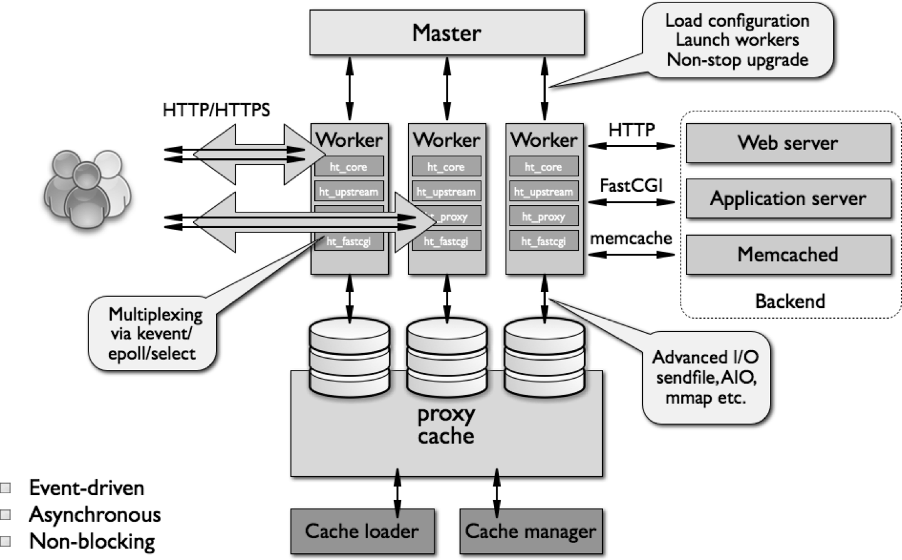

Nginx: engine X 淘宝有改进Nginx，叫Tengine

groupadd -r nginx useradd -g nginx -r nginx ./configure --prefix=/usr/local/nginx --conf-path=/etc/nginx/nginx.conf --user=nginx --group=nginx --error-log-path=/var/log/nginx/error.log --http-log-path=/var/log/nginx/access.log --pid-path=/var/run/nginx.pid --lock-path=/var/lock/nginx.lock --with-http_ssl_module --with-http_stub_status_module --with-http_gzip_static_module --with-http_flv_module --with-http_mp4_module --http-client-body-temp-path=/var/tmp/nginx/client --http-proxy-temp-path=/var/tmp/nginx/proxy --http-fastcgi-temp-path=/var/tmp/nginx/fastcgi --http-uwsgi-temp-path=/var/tmp/nginx/uwsgi make && make install mkdir -pv /var/tmp/nginx/{client,fastcgi,proxy,uwsgi} # 创建运行所需要的文件夹
全局配置段events {...}: 定义event模型工作特性http {...}: 定义http协议相关的配置，由ngx_http_core_module模块所引入directive value1 [value2...];
自定义变量
set var_name value;
user USERNAME [GROUPNAME]; # 指定运行worker进程的用户和组 pid /path/to/pid_file; # 指定nginx的pid文件 worker_rlimit_nofile NUM; # 指定所有worker进程所能够打开的最大文件句柄数
worker_processes NUM; # worker线程的个数(通常少于物理CPU核心数) worker_cpu_affinity 00000001 00000010 00000100; # 绑定worker进程至指定的CPU上，提升缓存命中率 worker_priority NUM; # 指定worker进程的nice值(-20~19) timer_resolution t; # 指定时间解析精度，减小日志记录的时间精度，可以提高性能
daemon {on|off}; # 是否以守护进程方式启动nginx；调试时使用off
master_process {on|off}; # 是否以master/worker模型来运行nginx
error_log {file|stderr|syslog:server=..|memory:size} level; # 设置错误日志位置和级别
events {
accept_mutex {on|off}; # master调度用户请求至各worker时用的负载均衡锁；打开时表示能让多个worker轮流地、序列化地与响应新请求
accept_mutex_delay TIME;
lock_file /path/to/lock_file;
use {epoll|rgsig|select|poll}; # 定义使用的事件模型，建议让Nginx自动选择
worker_connections NUM; # 每个worker进程所能够响应的最大并发请求数，比较重要
}
http { upstream { ... } server { # 虚拟主机 listen IP:PORT; location /URL { # 类似于httpd中的<Location> if ...{ ... } root "/path/to/somewhere"; ... } } server { ... } }
定义虚拟主机
server { listen 80; server_name www.qiump.com; root "/usr/share/nginx/html" }
监听端口
listen [address:]port [backlog=number] [rcvbuf=size] [ssl] backlog=number: 指明TCP协议backlog队列的大小。默认为-1，表示不设置 rcvbuf=size: 设定监听句柄的SO_RCVBUF参数
指定匹配的主机名
server_name [...]; # 名称可使用通配符和正则表达式，可使用多个主机名
虚拟主机匹配顺序 1. 先做精确匹配，如: www.qiump.com 2. 左侧通配符匹配，如: *.qiump.com 3. 右侧通配符匹配，如: www.* 4. 正则表达式匹配，如: ~^.*\.qiump\.com$ 5. default_server
http, server, location, if 中，优先级从小到大允许根据用户请求的URI来匹配定义的各location，匹配到时，此请求将被相应的location块中的配置所处理，可嵌套使用
location [=|~|~*|^~] /URI {...} # 匹配URL location @name {...} # 用于其他部分的引用
匹配优先级 1. =: 精确匹配检查 2. ^~: URI的前半部分匹配，不支持正则表达式 3. ~: 正则表达式模式匹配，区分字符大小写 4. ~*: 正则表达式模式匹配，不区分字符大小写 5. 无符号: 没有符号表示进行左侧匹配
用于location配置段，定义路径别名
root 表示指明路径为对应location的根目录alias 表示路径映射，即location中的URI是相对于alias所指明的路径而言alias 不可用于正则匹配location /images/ {
root "/web1"; # 若访问 /images/a.jpg 相当于 /web1/images/a.jpg
alias "/web1/"; # 若访问 /images/a.jpg 相当于 /web1/a.jpg
}
默认主页面
index FILE ...
根据http状态码重定向错误页面
error_page code [...] [=code] {URI|@name}
[=code]: 以指定的响应码进行响应
@name: 使用以@name定义的location
按顺序检查文件是否存在，返回第一个找到的文件
try_files path1[,path2,...] URI try_files $uri $uri/ =404; # 参数以/结尾表示目录
使用正则表达式重写URL进行重定向，用于 location 中
rewrite regex replacement [flag]; # flag用于配置匹配后接下来的操作 空: 继续执行location接下来的语句 break: 一旦此rewrite规则重写完成后，不会再检查该location后的rewrite规则，然后以该URL继续执行当前location后的内容 last: 一旦此rewrite规则重写完成后，会重新匹配location(可能会造成死循环) redirect: 以302响应码(临时重定向)返回新的URL，地址栏会显示跳转后的地址 permanent: 以301响应码(永久重定向)返回新的URL，地址栏会显示跳转后的地址
Nginx的正则表达式括号的内容替换变量是$1、$2...
用于 location 和 server 中
if (condition) { ... }
false ，其它时候为 true=, !=~, ~*, !~, !~*-e, !-e-f, !-f-d, !-d-x, !-xif ($http_user_agent ~* MSIE) { # 检测客户端类型 rewrite ^(.*)$ /msie/$1 break; }
添加自定义响应首部
add_header X-Via $server_addr;
allow IP|all; deny IP|all;
auth_basic "message"; auth_basic_user_file FILE; # 使用htpasswd命令来创建用户账号文件
server { listen 443 ssl; server_name www.qiump.com; ssl_certificate NAME.crt; ssl_certificate_key NAME.key; ssl_... }
显示状态页
location /status {
stub_status on;
allow ..;
deny all;
}
状态页显示信息:
Active connections: 11921
当前所有处于打开状态的连接数
server accepts handled requests
11989 11989 11991
accept: 已经接受的连接数
handled: 已经处理的连接数
requests: 已经处理的请求数，在"保持连接"模式下，请求数会多于连接数
Reading: 0 Writing: 7 Waiting: 42
Reading: 正处于接受请求状态的连接数
Writing: 正处于处理请求或发送响应的连接数
Waiting: 保持连接下处于活动状态的连接数
location ~* \.(jpg|gif|jpeg|png)$ { vaild_referer none blocked www.qiump.com; # 定义合法引用 if ($invalid_referer) { # 检测引用是否合法 rewrite ^/ http://...; } }
log_format log格式名 log格式 # 定义log格式，可使用Nginx各模块内建变量 access_log log位置 log格式名 # 启用log open_log_file_cache ...; # 启动日志文件缓存
gzip on; gzip_min_length 1k; gzip_comp_level 6; gzip_types text/plain application/x-javascript text/css application/xml text/javascript application/x-httpd-php; # 配置需要压缩的文件格式
keepalive_timeout TIME; # 长连接的超时时长，默认75s keepalive_requests NUM; # 在一次保持连接上允许处理的最大资源请求数 keepalive_disable [msie6|safari|none]; # 为指定类型的浏览器禁用长连接 tcp_nodelay {on|off} # 对长连接是否使用TCP_NODELAY选项，TCP延迟能够合并多个请求进行处理，但会有延迟时间 client_header_timeout TIME; # 读取http请求报文首部的超时时长 client_body_timeout TIME; # 读取http请求报文body部分的超时时长 send_timeout TIME; # 发送响应报文的超时时长
LNMP使用反向代理来实现
location ~ \.php$ { root ...; fastcgi_pass 127.0.0.1:9000; # 使用fpm fastcgi_index index.php; fastcgi_cache... ; # 设置缓存 include fastcgi_params; # 该文件定义了常见的需要传递的各种参数 }
nginx可用于负载均衡，同时自带后端健康状态检测
upstream 来定义负载均衡组，使用反向代理 proxy_pass http://组名 来进行调用fail_timeout 的时间内，某个server连接失败了 max_fails 次，则nginx会认为该server不工作了，同时，在接下来的 fail_timeout 时间内，nginx不再将请求分发给失效的serverhttp { upstream backend { ip_hash; # 使用SH算法，默认使用RR算法；但对于使用SNAT的用户会发送给同一服务器 least_conn; # 使用WLC算法 sticky cookie ...; # 基于cookie来进行分配，解决上述问题 sticky route ...; # 客户端第一次请求时，服务器会发送一个后端路由标识给客户端，以后同个客户端访问则会访问同个服务器 server HOST/IP [weight=2] [max_fails=NUM] [fail_timeout=NUM] [backup|down]; backup: 把该服务器当做备用服务器，当其他服务器都不可用时使用 down: 把该服务器标记成不可用 server HOST/IP [weight=2] [max_fails=NUM] [fail_timeout=NUM] [backup|down]; server HOST/IP [weight=2] [max_fails=NUM] [fail_timeout=NUM] [backup|down]; } }
http { proxy_cache_path path [levels=level1_num:l2_num:..] keys_zone=name:size [inactive=time] [max_size=size] ; # 设定代理的缓存目录 server { listen server_name location /uri { proxy_pass http://192.168.3.7:80/newuri; # 该地址继承方式类似于alias，但当location使用正则时不能加newuri，可以使用rewrite重写 proxy_pass http://backend; #使用负载均衡组 proxy_set_header Host $host; # 传递用户所请求的主机(网址) proxy_set_header X-Real-IP $remote_addr; # 向后端服务器传递用户IP，后端服务器可特殊定义特定的LogFormat proxy_hide_header ..; # 隐藏响应给客户端的指定首部 proxy_connect_timeout time; # 服务器连接的错误判定时长 proxy_cache zone_name; # 使用缓存 proxy_cache_valid [code] time; # 定义不同响应码的缓存有效期限 proxy_cache_use_stale error timeout ... # 定义代理访问失败时的操作 proxy_cache_bypass $cookie_nocache $arg_nocache $http_authorization; # 设置在何种情形下nginx将不从cache取数据的 health_check ...; # 根据访问来进行健康状态检测，建议关闭访问日志 } } }
nginx -t # 检查配置语法 nginx -s reload # 重载配置